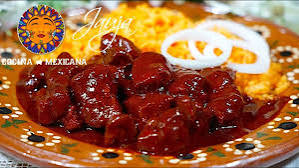

32.Zacatecas

- Platillo: Asado de boda
- Ingredientes: Carne de cerdo, chile ancho, clavo, canela, ajo, chocolate, vinagre.
- Historia: Tradicionalmente preparado en bodas y fiestas religiosas como símbolo de celebración.
- Dato curioso: Aunque se llama "asado", en realidad es un guiso espeso y dulce-picante.
>